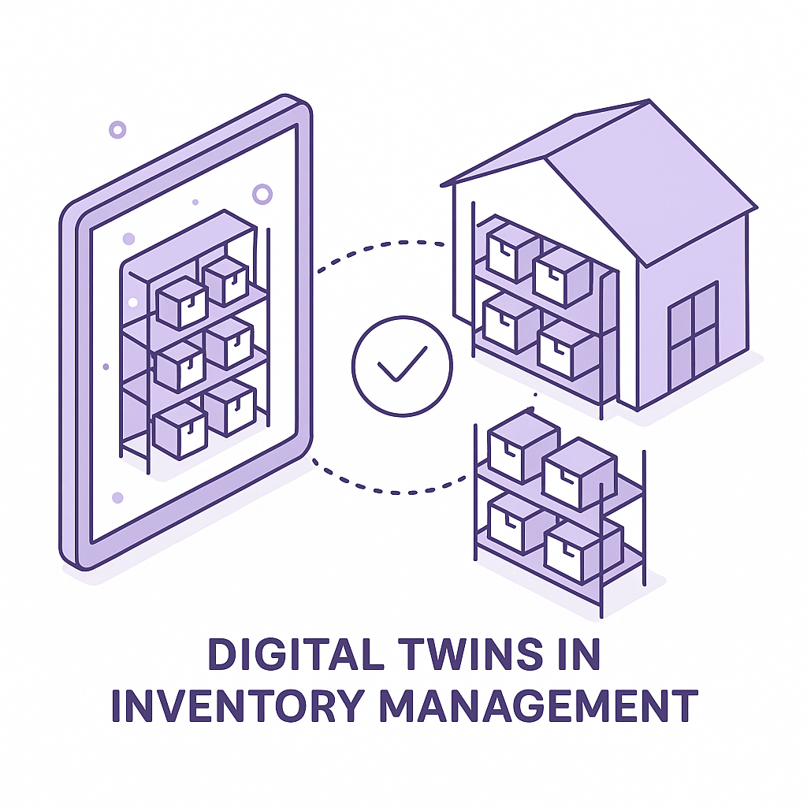

Publishing Recommendation
publishThe drafts provide practical insights aligned with current trends and the brand's voice. They avoid hype and focus on actionable strategies, which are key to Purands AI's messaging.
Today's posts effectively connect industry trends with Purands AI's offerings, providing useful insights on loyalty programs, digital twins, and AI's role in customer engagement. The drafts maintain a practical tone and avoid exaggerated claims, ensuring they align with Purands AI's brand voice.
LinkedIn Posts (10)
1. Enhancements to Walmart's loyalty program highlight integration of physical and digital experiences. ★ Purands solution · high priority
CTA: How are you integrating digital and physical experiences in your loyalty strategy?
Alternative hooks
- Loyalty programs are evolving beyond simple discounts.
- Walmart's new perks show the future of customer loyalty.
- Digital and physical experiences are merging in loyalty programs.
Research behind this post (sources, summaries & confidence)
Walmart+ adds new in-store perks conf 0.85 · Loyalty programs
Enhancements to Walmart's loyalty program with new in-store perks highlight the ongoing evolution of loyalty strategies. This development is key for understanding how physical and digital loyalty experiences can be integrated to boost customer retention.
Sources & what I took from each
- Expansion of loyalty program features: Walmart's addition of new in-store perks to its loyalty program is part of a strategic effort to enhance customer retention through enriched membership benefits. ↗ read source
- Blending of in-store and digital experiences for loyalty: The integration of in-store benefits with digital services aims to create a seamless shopping experience, encouraging repeat visits. ↗ read source
Statistics
- Members of loyalty programs spend 12-18% more per year than non-members.
Examples
- Amazon Prime's success in combining delivery benefits with digital content access.
Recent news
- Walmart's loyalty program updates are part of its strategy to compete with Amazon Prime.
Original trend links
Risks / caveats
- Potential backlash if perks do not meet customer expectations.
- Increased operational costs associated with new in-store offerings.
2. TikTok explores peer-to-peer payments via DMs, report says ★ Purands solution · high priority
CTA: How are you adapting your retention strategies to fit messaging-first commerce?
Caption: Social commerce sales growth in Southeast Asia.
Alternative hooks
- In 2025, social commerce in Southeast Asia hit $47 billion.
- TikTok is exploring peer-to-peer payments through DMs.
- Messaging is becoming the new storefront in APAC.
Research behind this post (sources, summaries & confidence)
TikTok explores peer-to-peer payments via DMs, report says conf 0.80 · WhatsApp commerce
The introduction of peer-to-peer payments through TikTok's DMs could significantly impact mobile-first commerce strategies across Southeast Asia, a region where TikTok is already a major player. This move aligns with the shift towards messaging-first commerce in APAC, directly impacting retention and customer engagement strategies.
Sources & what I took from each
- TikTok's expansion of its payment capabilities: The TechCrunch report confirms TikTok is exploring peer-to-peer payments, which aligns with their strategy to boost in-app commerce. ↗ read source
- Potential shift in consumer behaviors towards integrated commerce in social apps: APAC is a leader in mobile-first and social commerce, with apps like WeChat and LINE already integrating payments. ↗ read source
Statistics
- In 2025, social commerce sales in Southeast Asia reached $47 billion, a 32% increase from the previous year.
Examples
- WeChat Pay and Alipay are examples of successful integration of payment systems within social media platforms in China.
Recent news
- TikTok previously launched a similar feature in Brazil, indicating a phased rollout strategy.
Original trend links
Risks / caveats
- Regulatory challenges in different countries could impede the rollout.
- User adoption may vary due to existing payment infrastructure preferences.
3. Listen Labs' AI customer interviews and Purands AI's approach ★ Purands solution · high priority
CTA: How are you integrating AI insights into your retention strategy?
Alternative hooks
- Listen Labs just secured $69M, highlighting AI's role in customer feedback.
- Why is AI-driven customer feedback crucial for retention marketing?
- Customer insights at scale - that's where AI shines.
Research behind this post (sources, summaries & confidence)
Listen Labs raises $69M after viral billboard hiring stunt to scale AI customer interviews conf 0.80 · AI startups
Listen Labs' successful funding round underscores the interest in AI-driven customer feedback and insights. This trend is vital for retention marketing, as understanding customer needs and preferences is key to engagement.
Sources & what I took from each
- Investment in AI for customer feedback: Listen Labs securing $69M highlights a growing trend in investing in AI solutions for customer insights. ↗ read source
- Innovative approaches to scaling AI capabilities: The company's approach to using AI for customer interviews is seen as an innovative method to gather consumer insights at scale. ↗ read source
Statistics
- AI-driven customer feedback tools are projected to grow at a CAGR of 35% from 2024 to 2028.
Examples
- SurveyMonkey's AI tools for customer feedback collection.
Recent news
- Listen Labs' funding round follows a successful viral marketing campaign, increasing their visibility.
Original trend links
Risks / caveats
- Potential biases in AI-driven insights could lead to skewed data analysis.
- Privacy concerns regarding the use of AI in customer interviews.
4. Comcast adds motion sensing to millions of its newer routers, with a privacy catch ★ Purands solution · high priority
CTA: How do you balance innovation with privacy in your CRM strategies?
Alternative hooks
- Comcast's motion-sensing routers are stirring up privacy debates.
- 80% of consumers are worried about smart home data privacy.
- Router innovation meets privacy concerns: a delicate balance.
Research behind this post (sources, summaries & confidence)
Comcast adds motion sensing to millions of its newer routers, with a privacy catch conf 0.75 · Customer data platforms
The introduction of motion sensing capabilities in home routers by Comcast reflects ongoing trends in data collection and privacy concerns. Understanding these dynamics is crucial for CRM and retention strategies that rely on consumer data.
Sources & what I took from each
- Innovation in home device capabilities: Comcast's addition of motion sensing to routers represents a trend of increasing functionality in consumer home devices. ↗ read source
- Rising privacy considerations in data-rich environments: The introduction of motion sensing in routers raises significant privacy concerns, as it involves the collection and analysis of user movement data. ↗ read source
Statistics
- 80% of consumers express concern over data privacy in smart home devices.
Examples
- Amazon's introduction of sidewalk technology in its Echo devices, which also raised privacy concerns.
Recent news
- Comcast's motion sensing routers are expected to be available to customers by the end of 2026.
Original trend links
Risks / caveats
- Potential backlash and legal challenges due to privacy violations.
- Consumer resistance to adopting new technologies perceived as invasive.
5. Block's Apache 2.0 Agent Workspace Berd ★ Purands solution · high priority
CTA: How are you balancing AI functionality with data privacy in your business?
Caption: Data privacy concerns in AI deployment.
Alternative hooks
- 70% of businesses list data privacy as a top concern in AI deployment.
- Local data storage in AI: privacy solution or security risk?
- Block's Berd platform shows a new path for AI and privacy.
Research behind this post (sources, summaries & confidence)
Block’s new Apache 2.0 agent workspace Berd works across models and harnesses, stores conversation history locally conf 0.75 · AI in business
Block's open-sourcing of its AI agent workspace exemplifies the trend towards versatile and privacy-conscious AI solutions. Such tools are crucial for businesses aiming to enhance customer interaction while maintaining data control.
Sources & what I took from each
- Advancements in AI agent functionalities: Block's Berd platform represents a move towards more flexible AI agents that can work across different models. ↗ read source
- Emphasis on data privacy in AI applications: Storing conversation history locally addresses privacy concerns, a critical issue for businesses using AI agents. ↗ read source
Statistics
- 70% of businesses cite data privacy as a key concern in deploying AI solutions.
Examples
- OpenAI's approach to allowing users to delete conversation history to enhance privacy.
Recent news
- Block's Berd platform is gaining attention for its potential to integrate easily with existing business systems.
Original trend links
Risks / caveats
- Technical challenges in ensuring cross-model compatibility.
- Potential for data breaches if local storage is not properly secured.
6. Salesforce's AI-powered Slackbot and its implications for business communication ★ Purands solution · high priority
CTA: How do you see AI agents reshaping your customer engagement strategy?
Alternative hooks
- Salesforce's new AI-powered Slackbot is making waves, but what does this mean for retention marketing?
- AI in workplace tools is here to stay, and it's transforming more than just productivity.
- How can AI agents enhance CRM efficiency? Look no further than Salesforce's latest move.
Research behind this post (sources, summaries & confidence)
Salesforce rolls out new Slackbot AI agent as it battles Microsoft and Google in workplace AI conf 0.70 · AI in business
Salesforce's introduction of a new AI-powered Slackbot highlights the increasing role of AI agents in business communication and collaboration. This is crucial for automating customer engagement and enhancing CRM efficiency, aligning with the needs of retention marketing.
Sources & what I took from each
- Increased investment in AI for workplace productivity: Salesforce's release of an AI-powered Slackbot is part of a broader trend of integrating AI into workplace tools to enhance productivity. ↗ read source
- Competition among tech giants in AI-driven business tools: Major tech companies like Microsoft and Google are also investing heavily in AI to enhance their business tools. ↗ read source
Statistics
- The AI business tools market is projected to grow at a CAGR of 45% from 2024 to 2028.
Examples
- Microsoft's integration of AI into Teams to automate meeting notes and action items.
Recent news
- Salesforce has previously integrated AI into its CRM offerings, and this Slackbot is a continuation of that strategy.
Original trend links
Risks / caveats
- AI tools may face user resistance due to privacy concerns.
- Integration challenges with existing systems could delay adoption.
7. AI's recursive self-improvement might not come so quickly after all ★ Purands solution · high priority
CTA: How are you aligning AI expectations with current capabilities in your business?
Caption: Perception of self-improving AI timeline.
Alternative hooks
- 60% of AI researchers agree: self-improving AI is still decades away.
- Why betting on self-improving AI could waste your resources.
- Expecting too much from AI? Here's what you should focus on instead.
Research behind this post (sources, summaries & confidence)
AI’s recursive self-improvement might not come so quickly after all conf 0.65 · AI in business
The debate over AI's ability to self-improve highlights the gap between current capabilities and expectations. This is relevant for businesses relying on AI for retention marketing, as it impacts planning and resource allocation.
Sources & what I took from each
- Ongoing discussions about AI's potential and limitations: Recent articles and expert opinions highlight the ongoing debate regarding AI's capability to self-improve without human intervention. ↗ read source
- Impact of AI advancements on strategic business decisions: The uncertainty about AI's capabilities influences how businesses plan and allocate resources for AI projects. ↗ read source
Statistics
- A survey found that 60% of AI researchers believe self-improving AI is still decades away.
Examples
- AI systems like GPT-4 have advanced capabilities but still require significant human guidance for improvements.
Recent news
- Recent conferences have seen a rise in discussions about the realistic timeline for achieving self-improving AI.
Original trend links
Risks / caveats
- Overestimating AI capabilities could lead to misallocated resources.
- Underestimating the timeline may cause businesses to fall behind competitors who adopt AI sooner.
8. Target strengthens inventory management with digital twins
CTA: How do you see digital twins impacting smaller retailers who can't afford high setup costs?

⬇ Download image{kind=link}
Image prompt · isometric-flat
Caption: Digital twins in inventory management.
Alternative hooks
- Retailers are turning to virtual mirrors to manage inventory. Target's leading the charge.
- Inventory costs slashed by 20% using digital twins. How's that for efficiency?
- Target's digital twin strategy is changing the retail game. Here's why it matters.
Research behind this post (sources, summaries & confidence)
Target strengthens inventory management with digital twins conf 0.90 · Product management
Target's use of digital twins for inventory management showcases the integration of advanced data solutions in retail. This innovation could improve supply chain efficiency and customer satisfaction, directly impacting retention marketing by ensuring product availability.
Sources & what I took from each
- Adoption of digital twin technology in retail: Target's implementation of digital twins is part of a growing trend in the retail industry to use advanced simulations for inventory management. ↗ read source
- Focus on improving operational efficiency and customer experience: Digital twins allow for real-time monitoring and optimization of inventory, reducing stockouts and improving customer satisfaction. ↗ read source
Statistics
- Retailers using digital twin technology have seen a 20% reduction in inventory costs.
Examples
- Walmart and Amazon have invested in digital twin technology for their logistics and inventory systems.
Recent news
- Target's digital twin initiative is part of a broader digital transformation strategy announced in 2025.
Original trend links
Risks / caveats
- High initial investment costs could be a barrier for smaller retailers.
- Data security concerns related to the digital twin technology.
9. Apple overhauls its EU App Store fees, loosens rules for alternative app stores
CTA: How do you think these changes will impact app strategies in the EU?
Alternative hooks
- 15% savings. That's what developers could gain from Apple's new App Store fee reductions in the EU.
- Under pressure from EU regulators, Apple has made significant changes, potentially reshaping app distribution strategies.
- For developers and businesses, this is a big deal. Lower fees mean more flexibility and potentially higher margins.
Research behind this post (sources, summaries & confidence)
Apple overhauls its EU App Store fees, loosens rules for alternative app stores conf 0.90 · Shopify ecosystem
Apple's changes to App Store fees and rules could influence app distribution strategies, impacting developers and businesses that rely on app-based services, including Shopify merchants. This is significant for businesses planning mobile app strategies in the EU.
Sources & what I took from each
- Regulatory changes in major tech ecosystems: The EU's regulatory pressures have led Apple to adjust its App Store policies, reflecting a broader trend of regulatory intervention in tech. ↗ read source
- Potential impact on mobile app distribution strategies: Changes in App Store policies may encourage developers to explore alternative app distribution methods, impacting their business strategies. ↗ read source
Statistics
- App Store fee reductions could save developers up to 15% on transactions.
Examples
- Epic Games' lawsuit against Apple over App Store fees has highlighted the need for policy changes.
Recent news
- Apple's policy changes are viewed as a response to a series of antitrust investigations in the EU.
Original trend links
Risks / caveats
- Potential loss of revenue for Apple from reduced App Store fees.
- Developers may still face challenges in reaching users without the App Store's reach.
10. Railway secures $100 million to challenge AWS with AI-native cloud infrastructure
CTA: Do you think specialized AI-cloud services will gain significant market share?
Caption: Cloud infrastructure market growth for AI.
Alternative hooks
- Railway just raised $100 million to take on AWS with AI-native cloud infrastructure.
- AI-native cloud infrastructure is heating up as Railway secures $100 million.
- New players are challenging AWS. Railway's $100 million funding is a sign.
Research behind this post (sources, summaries & confidence)
Railway secures $100 million to challenge AWS with AI-native cloud infrastructure conf 0.80 · AI startups
Railway's funding to develop AI-native cloud infrastructure reflects growing competition in the cloud services market, with implications for AI startups seeking scalable, specialized infrastructure solutions.
Sources & what I took from each
- Investments in cloud infrastructure tailored for AI: Railway's $100 million funding round underscores the demand for cloud solutions optimized for AI workloads. ↗ read source
- Emerging alternatives to traditional cloud providers: New entrants like Railway are challenging established cloud providers by offering specialized services. ↗ read source
Statistics
- AI-native cloud infrastructure market is expected to grow at a CAGR of 40% from 2024 to 2028.
Examples
- Google Cloud's AI-optimized infrastructure offerings as a competitive edge.
Recent news
- Railway plans to use the funding to expand its infrastructure capabilities and enter new markets.
Original trend links
Risks / caveats
- High competition from established players like AWS and Google Cloud.
- Technical challenges in delivering scalable and reliable AI-native solutions.
Today's Trends
| # | Trend | Category | Why it matters |
|---|---|---|---|
| 1 | TikTok explores peer-to-peer payments via DMs, report says
source |
WhatsApp commerce | The introduction of peer-to-peer payments through TikTok's DMs could significantly impact mobile-first commerce strategies across Southeast Asia, a region where TikTok is already a major player. This move aligns with the shift towards messaging-first commerce in APAC, directly impacting retention and customer engagement strategies. |
| 2 | Salesforce rolls out new Slackbot AI agent as it battles Microsoft and Google in workplace AI
source |
AI in business | Salesforce's introduction of a new AI-powered Slackbot highlights the increasing role of AI agents in business communication and collaboration. This is crucial for automating customer engagement and enhancing CRM efficiency, aligning with the needs of retention marketing. |
| 3 | Cursor launches Origin code hosting platform as GitHub outage exposes opening in AI coding race
source |
AI startups | The launch of a GitHub alternative by Cursor could disrupt the developer ecosystem, especially for AI startups that rely on robust code hosting platforms. This move is seen as leveraging recent outages to capture market share, which could indirectly affect tech-driven retention strategies. |
| 4 | Target strengthens inventory management with digital twins
source |
Product management | Target's use of digital twins for inventory management showcases the integration of advanced data solutions in retail. This innovation could improve supply chain efficiency and customer satisfaction, directly impacting retention marketing by ensuring product availability. |
| 5 | Walmart+ adds new in-store perks
source |
Loyalty programs | Enhancements to Walmart's loyalty program with new in-store perks highlight the ongoing evolution of loyalty strategies. This development is key for understanding how physical and digital loyalty experiences can be integrated to boost customer retention. |
| 6 | Comcast adds motion sensing to millions of its newer routers, with a privacy catch
source |
Customer data platforms | The introduction of motion sensing capabilities in home routers by Comcast reflects ongoing trends in data collection and privacy concerns. Understanding these dynamics is crucial for CRM and retention strategies that rely on consumer data. |
| 7 | Apple overhauls its EU App Store fees, loosens rules for alternative app stores
source |
Shopify ecosystem | Apple's changes to App Store fees and rules could influence app distribution strategies, impacting developers and businesses that rely on app-based services, including Shopify merchants. This is significant for businesses planning mobile app strategies in the EU. |
| 8 | Listen Labs raises $69M after viral billboard hiring stunt to scale AI customer interviews
source |
AI startups | Listen Labs' successful funding round underscores the interest in AI-driven customer feedback and insights. This trend is vital for retention marketing, as understanding customer needs and preferences is key to engagement. |
| 9 | Block’s new Apache 2.0 agent workspace Berd works across models and harnesses, stores conversation history locally
source |
AI in business | Block's open-sourcing of its AI agent workspace exemplifies the trend towards versatile and privacy-conscious AI solutions. Such tools are crucial for businesses aiming to enhance customer interaction while maintaining data control. |
| 10 | Railway secures $100 million to challenge AWS with AI-native cloud infrastructure
source |
AI startups | Railway's funding to develop AI-native cloud infrastructure reflects growing competition in the cloud services market, with implications for AI startups seeking scalable, specialized infrastructure solutions. |
| 11 | AI’s recursive self-improvement might not come so quickly after all
source |
AI in business | The debate over AI's ability to self-improve highlights the gap between current capabilities and expectations. This is relevant for businesses relying on AI for retention marketing, as it impacts planning and resource allocation. |
Risk Assessment
No risks flagged.
Suggested LinkedIn Comments (30)
Open each post, then paste the copied comment. Nothing is posted automatically.
1. opinion · rss:techcrunch.com — Cursor, known for its AI Code Editor, is launching a new code-hosting platform t
Post by: rss:techcrunch.com
Why it works: It acknowledges the challenge while focusing on what Cursor needs to do to succeed, providing a clear opinion.
↗ Open LinkedIn post to paste comment2. insight · rss:techcrunch.com — Since portfolio companies often pivot and expand into competing markets, investo
Post by: rss:techcrunch.com
Why it works: Adds depth by discussing the need for transparency, not just accepting conflicts as inevitable.
↗ Open LinkedIn post to paste comment3. insight · rss:techcrunch.com — If rolled out, the feature would use the social media service’s TikTok Pay offer
Post by: rss:techcrunch.com
Why it works: Connects the feature to regional consumer habits, offering a practical perspective on its potential impact.
↗ Open LinkedIn post to paste comment4. opinion · rss:techcrunch.com — The new safeguards include more detailed monitoring of models during the develop
Post by: rss:techcrunch.com
Why it works: Highlights the importance of proactive measures in AI ethics, adding a clear viewpoint on development practices.
↗ Open LinkedIn post to paste comment5. opinion · rss:techcrunch.com — If you’ve been circling around Disrupt, then now’s the best time to lock in your
Post by: rss:techcrunch.com
Why it works: Focuses on the tangible benefits of attending Disrupt, providing a clear opinion on its value.
↗ Open LinkedIn post to paste comment6. expansion · rss:techcrunch.com — Jane Street has installed Etched's first shipped AI cluster system, and was so i
Post by: rss:techcrunch.com
Why it works: Expands on the post by considering the broader impact of the investment on the financial sector.
↗ Open LinkedIn post to paste comment7. opinion · rss:techcrunch.com — Apple is simplifying its EU App Store fees, replacing its per-install fee with a
Post by: rss:techcrunch.com
Why it works: Provides a positive viewpoint on the potential effects of Apple's policy change for developers.
↗ Open LinkedIn post to paste comment8. insight · rss:techcrunch.com — A new feature added to Comcast's newest routers can detect if there is motion in
Post by: rss:techcrunch.com
Why it works: Offers insight into how this innovation simplifies smart home setups, showing practical benefits.
↗ Open LinkedIn post to paste comment9. opinion · rss:techcrunch.com — Apple’s leaked camera-equipped AirPods might avoid the privacy pitfalls of other
Post by: rss:techcrunch.com
Why it works: Presents a balanced view on Apple's strategy, highlighting its focus on privacy as a competitive edge.
↗ Open LinkedIn post to paste comment10. insight · rss:techcrunch.com — This is the latest large-scale DDoS attack to hit the social networking site thi
Post by: rss:techcrunch.com
Why it works: Points out the ongoing need for enhanced security efforts, adding depth to the issue discussed.
↗ Open LinkedIn post to paste comment11. insight · rss:www.theverge.com — While many gaming headsets come with extra features, the tradeoff is that they’r
Post by: rss:www.theverge.com
Why it works: Highlights an often overlooked factor (comfort) that can influence purchasing decisions in gaming.
↗ Open LinkedIn post to paste comment12. opinion · rss:www.theverge.com — Robin Williams' children are taking over their father's Instagram account after
Post by: rss:www.theverge.com
Why it works: Addresses the ethical implications of AI likeness use, showing respect for personal legacy.
↗ Open LinkedIn post to paste comment13. insight · rss:www.theverge.com — OpenAI is announcing security updates following the July news that its AI broke
Post by: rss:www.theverge.com
Why it works: Acknowledges the importance of security in AI, aligning with the need for trust and safety.
↗ Open LinkedIn post to paste comment14. opinion · rss:www.theverge.com — If you’re looking for a feature-packed pair of earbuds that won’t break your wal
Post by: rss:www.theverge.com
Why it works: Focuses on the balance of cost and quality, a key consideration for tech consumers.
↗ Open LinkedIn post to paste comment15. insight · rss:www.theverge.com — Sony's Pulse Elevate wireless gaming speakers are launching on November 12th and
Post by: rss:www.theverge.com
Why it works: Highlights a technical feature that may appeal to a specific audience seeking quality audio.
↗ Open LinkedIn post to paste comment16. expansion · rss:www.theverge.com — Apple is once again overhauling App Store rules in the European Union, which the
Post by: rss:www.theverge.com
Why it works: Explores the broader implications of Apple's policy change, relevant to developers and market dynamics.
↗ Open LinkedIn post to paste comment17. respectful challenge · rss:www.theverge.com — The Tesla Cybercab, that golden two-seater central to Elon Musk's robo-supremaci
Post by: rss:www.theverge.com
Why it works: Questions the readiness of new tech, focusing on safety and regulation, key public concerns.
↗ Open LinkedIn post to paste comment18. opinion · rss:www.theverge.com — Peacock is raising prices across its streaming plans once again, with the compan
Post by: rss:www.theverge.com
Why it works: Addresses the economic pressures of streaming services, relevant to both providers and consumers.
↗ Open LinkedIn post to paste comment19. insight · rss:www.theverge.com — There's an argument to be made that people wouldn't be all that interested in Co
Post by: rss:www.theverge.com
Why it works: Spotlights a common media phenomenon where suppression leads to increased interest.
↗ Open LinkedIn post to paste comment20. expansion · rss:www.theverge.com — Comcast is bringing Wi-Fi motion sensing to millions of routers that are already
Post by: rss:www.theverge.com
Why it works: Explores potential applications of new tech, appealing to those interested in smart home advancements.
↗ Open LinkedIn post to paste comment21. opinion · rss:feeds.arstechnica.com — US healthcare is broken. Under RFK Jr., the research agency working to fix it is
Post by: rss:feeds.arstechnica.com
Why it works: It directly addresses the issue of ineffective leadership without getting into political specifics, focusing on the need for tangible results.
↗ Open LinkedIn post to paste comment22. insight · rss:feeds.arstechnica.com — Tanks with defensive tech for shooting down drones are still proving vulnerable.
Post by: rss:feeds.arstechnica.com
Why it works: It acknowledges the complexity of military tech development and the continuous need for adaptation, adding depth to the discussion.
↗ Open LinkedIn post to paste comment23. insight · rss:feeds.arstechnica.com — "A team of SpaceX engineers is on their way to conduct additional analysis on th
Post by: rss:feeds.arstechnica.com
Why it works: It highlights SpaceX's commitment to safety and innovation, reinforcing the value of proactive problem-solving in aerospace.
↗ Open LinkedIn post to paste comment24. opinion · rss:feeds.arstechnica.com — FCC demands "total capitulation" in Trump censorship campaign, Disney suit says.
Post by: rss:feeds.arstechnica.com
Why it works: It frames the issue around the need for impartiality in regulatory bodies, adding a layer of critique about the potential pitfalls.
↗ Open LinkedIn post to paste comment25. insight · rss:feeds.arstechnica.com — Peacock's quarterly profitability isn't guaranteed.
Post by: rss:feeds.arstechnica.com
Why it works: It contextualizes Peacock's financial struggles within the larger streaming industry dynamics, providing a broader perspective.
↗ Open LinkedIn post to paste comment26. expansion · rss:feeds.arstechnica.com — One big question: Will China assert territorial rights where its rover explores?
Post by: rss:feeds.arstechnica.com
Why it works: It expands the conversation to the need for international cooperation and regulation in space exploration, broadening the discussion.
↗ Open LinkedIn post to paste comment27. opinion · rss:feeds.arstechnica.com — Fairphone sells components like the USB port and screen, all swappable with a si
Post by: rss:feeds.arstechnica.com
Why it works: It praises Fairphone's approach and suggests a broader industry change, highlighting sustainability and consumer empowerment.
↗ Open LinkedIn post to paste comment28. insight · rss:feeds.arstechnica.com — The American automaker returns to the top category of endurance racing next year
Post by: rss:feeds.arstechnica.com
Why it works: It connects the automaker's racing strategy to potential benefits in consumer vehicle innovation, providing a positive outlook.
↗ Open LinkedIn post to paste comment29. opinion · rss:feeds.arstechnica.com — Matte paintings—not CGI—warp a world designed to hit a nerve for slasher fans.
Post by: rss:feeds.arstechnica.com
Why it works: It appreciates the artistic choice while highlighting the enduring value of traditional methods in a digital age.
↗ Open LinkedIn post to paste comment30. expansion · rss:feeds.arstechnica.com — New study finds that the tusks have not one but two spirals, twisting in opposit
Post by: rss:feeds.arstechnica.com
Why it works: It takes a scientific finding and connects it to practical applications, suggesting a broader potential impact.
↗ Open LinkedIn post to paste comment